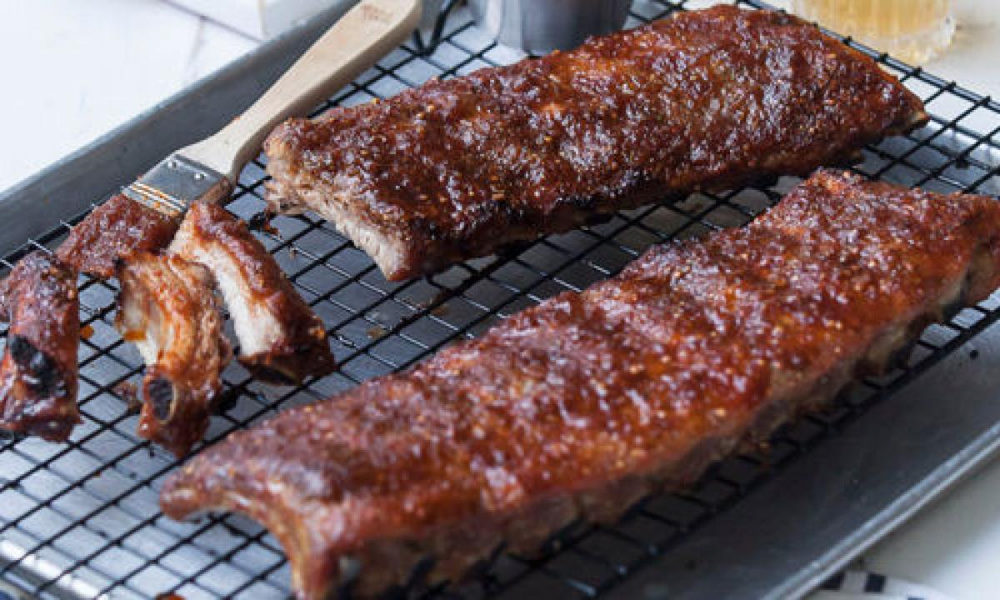

Costillas BBQ tradicional

Descripción
En su esencia, el BBQ es una forma de asar carnes y darles un sabor ahumado. Sin embargo, fue en Estados Unidos donde se desarrolló la idea de agregar una salsa que le diera un toque más sabroso al pollo, cerdo o cordero. Esta salsa podía ser agridulce o picante, hecha a base de ingredientes como tomate, mostaza, vinagre y especias. La Georgia Barbecue Sauce Company de Atlanta fue la primera en comercializar una de estas salsas en 1909.
La tradición de usar salsa BBQ se arraigó tanto que surgieron concursos donde las familias competían para destacar con sus versiones de la salsa y conquistar a los jurados en diferentes condados de estados como Texas, Kansas, Luisiana y Georgia, entre otros.
Con el tiempo, la salsa BBQ cruzó fronteras y se convirtió en uno de los sabores característicos de Norteamérica, extendiéndose más allá de la parrilla y también utilizándose en preparaciones de horno.
A continuación, se presenta una receta tradicional de costillas de cerdo al estilo BBQ:
Ingredientes para cuatro porciones
Para preparar la salsa, necesitará:
- 4 cucharaditas de semillas de cilantro.
- 1 cucharadita de paprika dulce.
- ½ taza de jugo de naranja fresco.
- 2 cucharaditas de mostaza.
- 5 cucharadas de vinagre de manzana.
- 6 cucharadas de salsa inglesa.
- 1 cucharadita de cajún.
- ¾ de taza de miel.
- ¼ de cucharadita de humo blanco.
- ¾ de taza de puré de tomate fresco.
- 2 cucharaditas de ralladura de limón.
- Sal al gusto.
Para hacer las deliciosas costillas necesita estos ingredientes:
- 3 libras de costillas de cerdo (baby back ribs).
- 2 cucharadas de semillas de mostaza.
- 2 cucharaditas de cajún.
- 1 cucharada de orégano seco.
- 1 cucharadita de comino en polvo.
- 2 cucharaditas de sal parrillera.
- 1 taza de azúcar morena.
Paso a paso
- Triture en un mortero las semillas de mostaza, el cajún, el comino y la pimienta. Luego, añada la sal y el azúcar a la mezcla resultante.
- Cubra las costillas crudas con la mezcla de especias y azúcar, y deje marinar en la nevera durante tres horas.
- Mientras las costillas marinan, prepare la salsa BBQ en una olla mezclando todos los ingredientes y cocínela a fuego medio durante 10 minutos para lograr una consistencia media entre líquida y espesa. Agregue la ralladura de limón y refrigere.
- Precaliente el horno a 180 °C. Coloque una parrilla sobre la lata del horno que usará para cocinar las costillas. Coloque las costillas encima, cúbralas con papel de aluminio y hornéelas durante 30 minutos. Luego, retire el papel de aluminio, unte la salsa BBQ sobre las costillas con una brocha y vuelva a colocarlas en el horno.
- Continúe horneando por 20 minutos más, retire del horno y vuelva a untar más salsa sobre las costillas. Hornéelas durante 10 minutos adicionales.
- Finalmente, corte las costillas y sírvalas acompañadas con más salsa en un pequeño recipiente, en caso de que los comensales quieran añadir más. Pueden acompañarse con papas de la forma que prefiera.
Sirva al gusto!